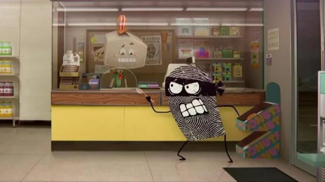

Robo assalta banco
Devido á um ataque Hacker nesta madrugada um robo, conhecido como WALLE, se revoltou e assaltou um banco com uma colher!

Devido á um ataque Hacker nesta madrugada um robo, conhecido como WALLE, se revoltou e assaltou um banco com uma colher!

Uma nova tecnologia baseada em inteligência artificial foi lançada nesta semana e já está chamando atenção do mundo da tecnologia. O sistema é capaz de analisar códigos complexos e criar aplicações completas em poucos segundos.
Uma frente fria chegou de surpresa nesta manhã, derrubando as temperaturas em diversas cidades. Meteorologistas afirmam que a queda foi de mais de 10°C em poucas horas.

Alunos organizaram uma feira aberta ao público para incentivar a leitura. No evento, qualquer pessoa pode levar um livro e trocar gratuitamente por outro título disponível.